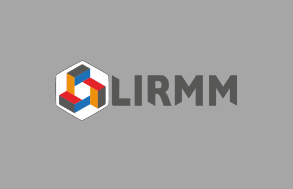
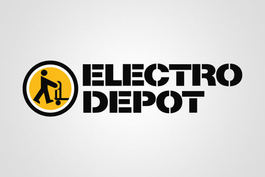
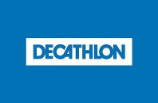
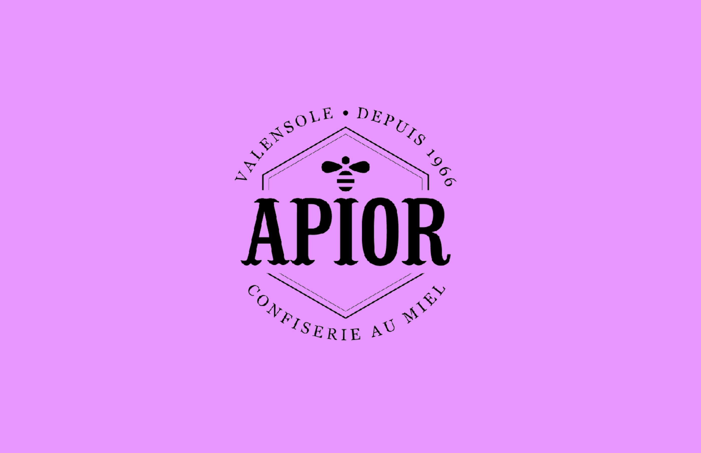
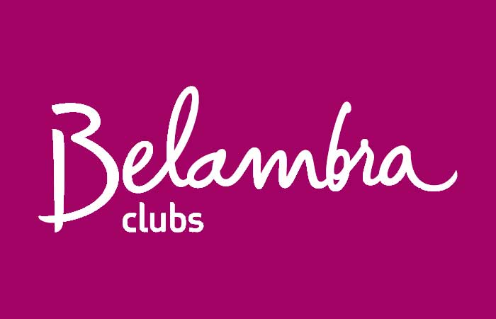

Quelques informations sur moi ...
Jeune étudiant en informatique je suis passionné depuis tout petit par les nouvelles technologies. Tout commence par de l'électronique, puis cela se propage sur la création de site web simples, pour finir en master informatique. Au lycée je choisis donc l'option ICN (informatique et création numériques) lors de mon année de première. Cette option est basée sur le volontariat et n'est pas obligatoire. C'est là où les premières bases du code apparaissent, avec le Pascal et le C. Puis en terminale je choisis l'option ISN (informatique et science du numérique) afin de continuer mon parcours, où les bases du code sont un peu plus poussées et où un projet final est attendu.
Par la suite je choisis donc de m'inscrire en CMI informatique à la faculté des sciences de Montpellier, afin de continuer dans le domaine qui m'intéresse depuis tant d'années.
Après avoir passé les 3 années de licence, je suis maintenant en Master Génie Logiciel.
Quelques chiffres à propose de moi
Voici quelques chiffres, qui pourraient être utiles ...
745
Score voltaire sur 900
10
Langages étudiés et utilisés
74
Semaines de travail/stages depuis 2018
10
Projets personnels réalisés
Quelques projets multimédia
La plupart des projets suivant sont des projets personnels, l'icone représente des projets scolaires

SITE DE SUIVI D'ACHAT REVENTE
Site avec création de compte, ajout de données et suivi de revente

Voir le projet
JEUX IOS
LE MORPION
Jeu du morpion avec IA (simple)


Diplômes et certifications
Dans cette section vous trouverez dles diplômes et certifications que j'ai pu obtenir au cours de mes études. Vous pouvez les consulter et les télécharger sur la page Documents
Expériences professionnelles
Voici quelques entreprises dans lesquels j'ai travaillé. Vous pouvez retrouver mon parcours complet sur mon CV
Vogo
Stagiaire Web dans l'entreprise VOGO dans l'équipe de développement. Maintenance et réalisations de modules pour la partie Web front et back. J'ai pu utilser différents langages comme HTML, CSS, JavaScript, SQL, VueJS etc...
Stagiaire développement Web

Lirmm
Réalisation de plusieurs stage, Mavis avec la reconstitution en 3D d'un musée, comprenant des batiments et un environnement complet. Réalisation d'un deuxième stage avec un analyseur de mails en Python.
Stagiaire au Lirmm

Electro Depot
Vendeur et conseiller multimédia dans les rayons Télévision, Hi-Fi, Téléphonie et Informatique. Réalisation de différents supports et affiches graphiques pour la vente. Interventions au drives et dans les rayons electroménagers.
Conseiller multimédia

Décathlon
Vendeur conseiller mécanicien, avec formation de 3 jours sur le montage et l'entretien des vélos. Vendeur sur les rayons chasse et pêche et cyclisme. Apprentissage de la caisse manuelle et automatique avec étiquettes RFID.
Vendeur omni-commerçant

Apior Valensole
Manutentionnaire dans une usine locale de production de bonbon au miels dans la commune de Valensole. Récupération du miel dans les ruches des champs de lavande. Mise en sachets des différentes variétées.
Manutentionaire

Belambra Clubs
Valet de chambre, changement des draps et des consomables dans les chambres. Nettoyage des chambres, des mobilhomes, des appartements et des restaurants. Réalisation des mêmes tâches au domaine Chateau Laval.
Valet de chambre